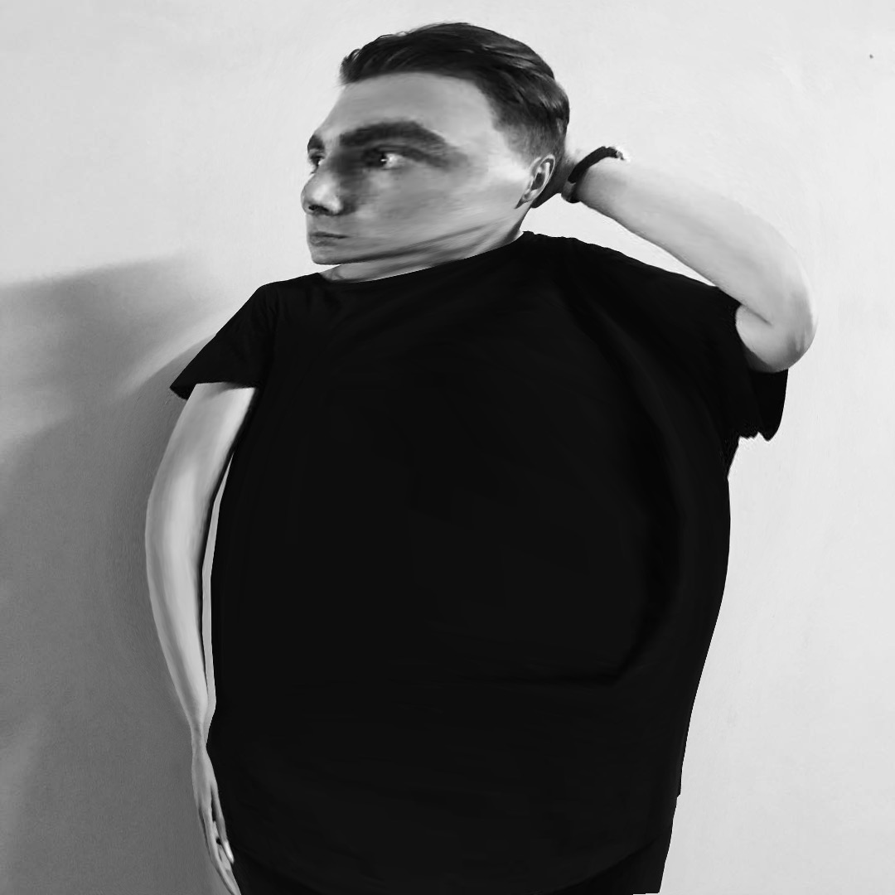

Меня зовут Дима и в свои 26 лет я пересмотрел всевзможные фильмы, больше всего меня привлекают триллеры и комедии, я не силён в драмах и боевиках. Конечно, больше всего я люблю смотреть фильмы в кино, а как нам известно кино без попкорна - это не кино. До своего увлечения ходить в кино на каждый фильм я выглядел примерно так:
В это сложно поверить, но спустя 10 лет, после ежедневного поедания попкорна я стал таким:
Поэтому уверяю, моё мнение должно быть авторитетным. Итак, ближе к делу))
(По моему скромному мнению)
| Название | Жанр | Год | Описание |
| Пленницы | Триллер | 2013 | Дочь Келлера Довера уходит на прогулку с подругой и исчезает. Первого подозреваемого — слабоумного Алекса — ловят очень быстро, но у полиции недостаточно улик для ареста. И тогда отец девочки решает вершить суд сам. |
| Одноклассники | Комедия | 2010 | Прошло тридцать лет после окончания средней школы, и пять хороших друзей снова встречают друг друга на похоронах их тренера, под руководством которого они в детстве выиграли чемпионат по баскетболу. В связи с этим один из них решает снять дом у озера, чтобы вспомнить старые добрые времена. Там они узнают друг друга заново и знакомятся с семьями своих школьных друзей. |
| Парни со стволами | Боевик | 2016 | Реальная история о приятелях-планокурах из Майами, умудрившихся выбить в Пентагоне контракт на 300 миллионов долларов на поставку оружия. |